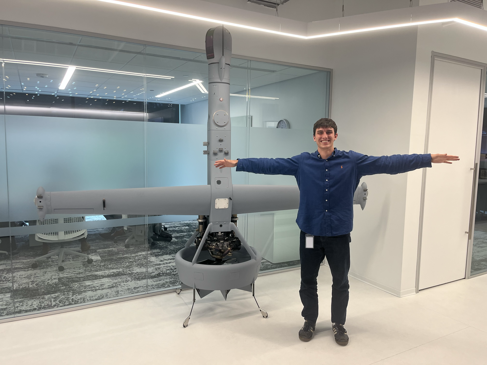
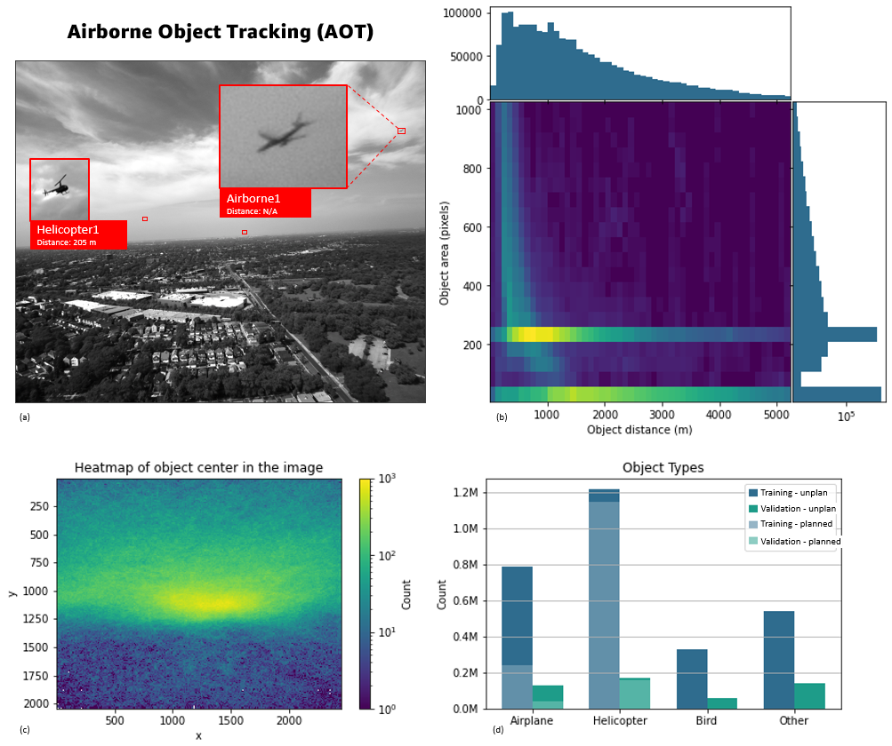
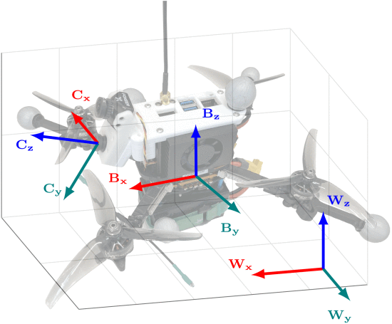

Tristan Thakur
Computer Science @ Georgia Tech | ML/AI | Robotics & Autonomy
About
Hi, I’m Tristan, a Georgia Tech computer scientist working at the intersection of machine learning
and autonomy. I am focused on bridging the gap between advanced models and practical applications
to develop high-performance systems that solve the most challenging real-world problems.
My experience broadly includes defense-sponsored machine learning research for airborne perception
and real-time decision pipelines for mission-critical autonomous flight platforms. I have worked on
evolutionary optimization for neural network architecture design, surrogate modeling, deployed
classification systems, and navigation algorithms operating in high-dimensional state spaces under
physical and computational constraints. I care deeply about robustness, scalability, and closing the gap
between research prototypes and deployed systems.
Technically, I am increasingly focused on learning-based decision systems, particularly deep
reinforcement learning and multi-agent coordination frameworks. I am interested in decentralized
control, adversarial and cooperative agent dynamics, and the design of robotic systems that must
reason under uncertainty while interacting with other autonomous agents in dynamic environments.
I am motivated by the challenge of building resilient, adaptive intelligence that extends
beyond static prediction toward continuous, strategic decision-making.
Long term, I want to engineer self-improving, intelligent systems that coordinate across agents
and operate reliably in complex, high-stakes domains. My goal is to help advance the next generation
of autonomous platforms where learning, control, and systems engineering converge.
Experience
Shield AI — Autonomy Engineer Intern
Built mission-autonomy capabilities using C++ for Group 5 aircraft, broadly including path-planning,
multi-agent coordination and high-fidelity testing infrastructure.
Read more

Georgia Tech Research Institute — ML Engineer Intern
Developed Auto-ML solutions for UAV airborne object detection that surpassed benchmarks
and optimized onboard classification algorithm for fielded ISR system contracted by DoD AARO.
Read more

GT Student Foundation Investments Committee — Head of Quant Research
Directed quant research for a $2M+ AUM university endowment fund, developing
systematic trading models, signal frameworks, and portfolio optimization tools.
GT Vertically Integrated Projects (Google & BMW sponsored) — Undergraduate Researcher
Led a Google & BMW sponsored AI research team developing an evolutionary-algorithm
based engine for generating high–performance image classification neural networks.
Projects
Cellular Automata–LLM Ecological Policy Modeling & Simulation
A hybrid Cellular Automata-LLM decision framework that eradicates invasive species under
explicit spatial and budget constraints.
Read more
Designed and implemented a hybrid simulation environment that couples a spatially explicit Cellular Automata (CA) model with a Large Language Model (LLM) acting as a constrained decision-making agent. The CA models invasive species dynamics across a land-cover grid, incorporating life-cycle transitions, stochastic mortality, density-dependent spread, and long-range dispersal.
I architected the interface between the simulator and the LLM policy, defining a structured observation schema and a cost-aware action space that enforces strict budget and temporal constraints. On each decision cycle, the LLM reasons over summarized system state to select interventions that balance immediate suppression against long-term eradication strategy.
In multi-year simulations, the LLM-driven policy achieved complete eradication while reducing peak infestation and intervention frequency relative to greedy and heuristic baselines. The project demonstrates how language-model agents can operate as adaptive controllers within partially observed, stochastic dynamical systems rather than static rule-based policies.
Learning UAV State Estimation in GPS-Denied Environments
A multimodal, dynamics-aided state estimator that fuses vision + IMU + control inputs to predict 12-DoF UAV state in GPS-denied conditions.
Read more
Built an end-to-end learning pipeline for UAV state estimation using the Race Against the Machine dataset (time-synchronized RGB frames, IMU, motor current/thrust, command inputs, and motion ground truth). The estimator learns a function of historical observations and actuation inputs to predict the full 12-dimensional state (position, attitude, linear/angular velocity) from a sliding temporal window, explicitly incorporating dynamics signals beyond standard visual–inertial fusion.
Implemented a preprocessing stack that extracts 512-D visual embeddings via pretrained ResNet-18, compresses them with PCA to 100 features (~95% variance preserved), and merges them with cleaned/normalized IMU + control features. Trained and compared three estimators: a linear baseline, an MLP over a concatenated history window, and an LSTM over 50 timesteps. The MLP achieved the best overall accuracy (Test MAE 0.141; position MAE 0.099 m; velocity MAE 0.372 m/s), while the LSTM was strongest on orientation (roll/pitch/yaw MAE 0.0539 rad), demonstrating the tradeoff between high-dimensional nonlinear mapping vs. sequential inductive bias.
